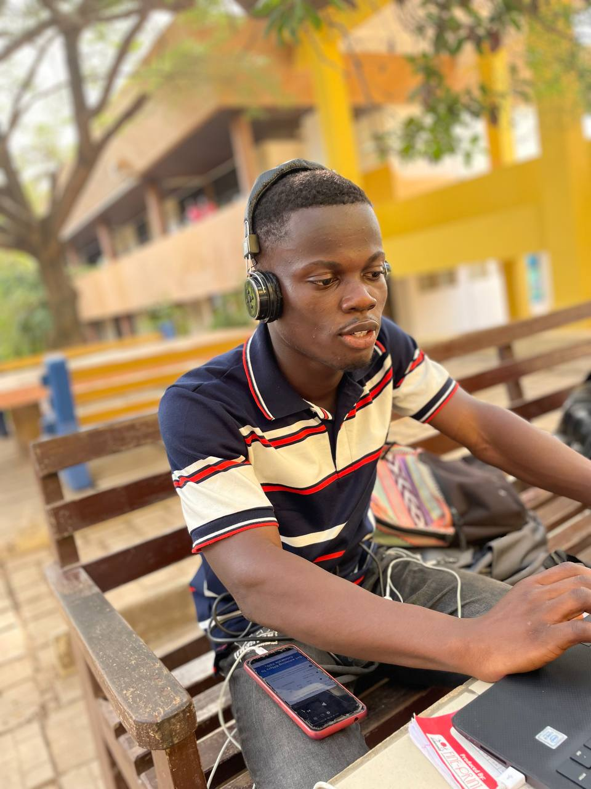
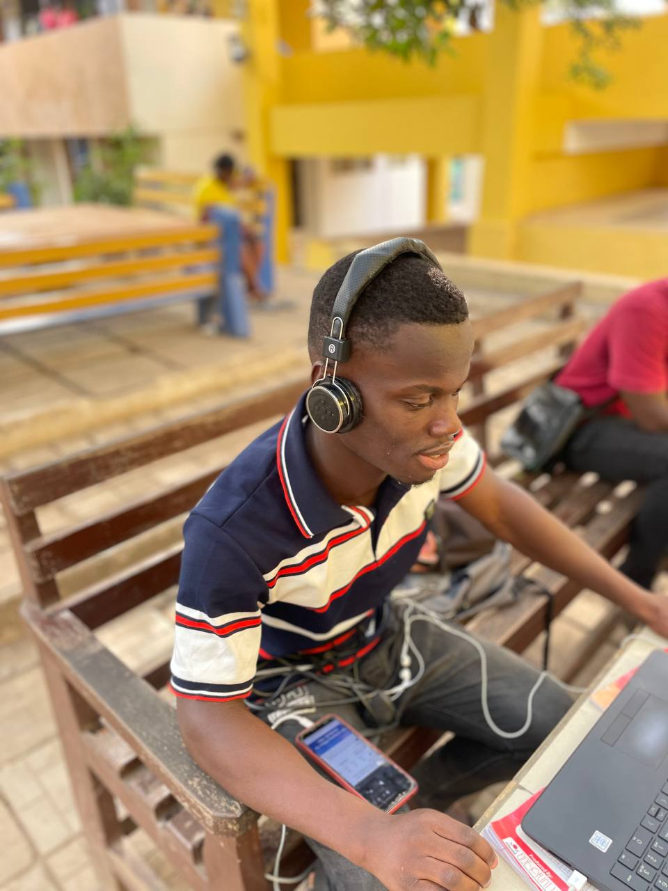
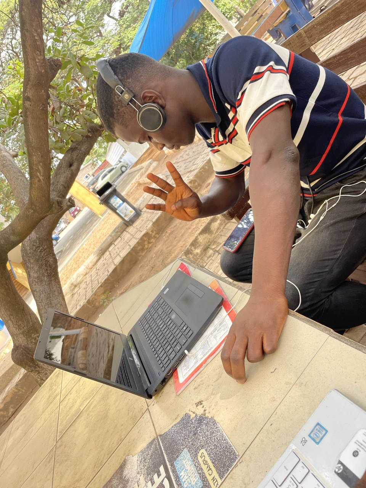

My Profile
Hey, You there welcome to my personal website. It reads as personal but as warming as i am sharing it with you guys. I'm Denkyi Bright Acheampong, also known as King Kuuta. I'm from Kwahu Fodoa a Town in the Eastern region of Ghana.
I attended Sovereign International School for my Junior High and Okuapemman School for Senior High . I'm currently school at Ghana Communication Technology University where I'm pursing my Bachelor's Degree in Information Technology and currently in Level 300 to be an aspiring software programmer.
No one comes in this world at the stage where I am right now, without the support of family and friends. In fact, what I am today, is because of my family. My father is a reputable business man in our community. My mothers is a doctor. They both love their profession. That’s I have learned from my parents. That is, the value of time, sincerity, hard work and dedication to the purpose.
My pictures
  Hobbies
- Programming
- Gamming
- Football
Likes
- Eating
- Learning
- Making Friends
Dislikes
- Reading
- Extreme Activities
- People who gossip
My Social Media
A video of My self
My favourite Songs